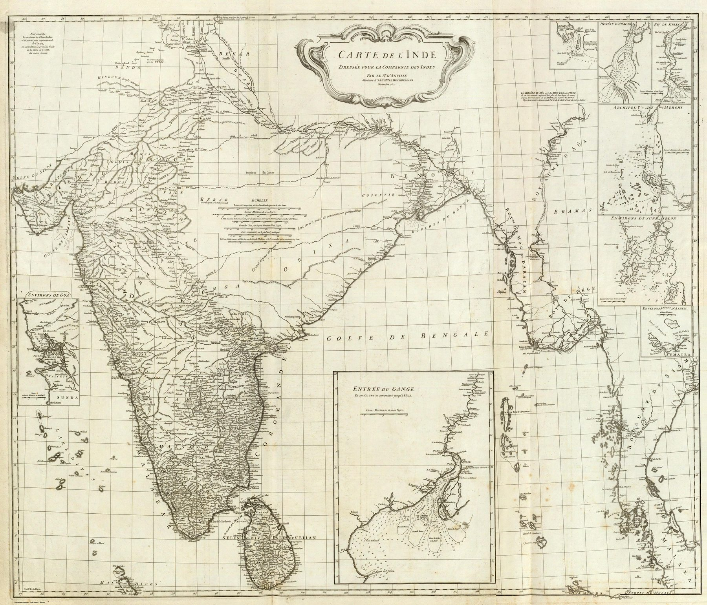

← Baroque Mughals and Companies

Jean-Baptiste Bourguignon d'Anville's Carte de l'Inde, drawn for the French Compagnie des Indes in 1752, is the most rigorous map of the subcontinent produced before the British surveys: cartography as critical scholarship rather than decoration.
The object
D’Anville (1697–1782), the foremost French geographer of his century and later premier géographe du roi, compiled the map in Paris for the Compagnie des Indes. Guillaume Delahaye engraved it, with an ornamental cartouche designed by Gravelot and cut by Jean-Baptiste Delafosse. The map was engraved on four sheets, here joined as a composite, at a scale of roughly 1:3,100,000.
Method – compilation as criticism
D'Anville never set foot in India. He weighed every available source – itineraries, route-distances, missionary accounts, astronomical fixes – against the others rather than copying any. Inheriting the empirical emphasis of the Delisles, he is often regarded as the first scientific cartographer, and the map is among the purest examples of that approach.
The honesty of the blank
The map's most radical feature is what it omits. Southern India and the coasts, well served by observation, are rendered in fine detail; the northern interior, poorly known, is left conspicuously sparse, its names thinning to bare paper. Where predecessors had invented, d'Anville left emptiness – treating an honest gap as more truthful than a decorative guess. Insets enlarge the strategically vital environs of Goa and the approaches to the Hughli River.
Significance
The map became a major European reference for India at mid-century and was copied extensively. Its authority lies in disciplined comparison of reports and observations. It marks the high point of the subcontinent drawn from outside by critical compilation, immediately before Company surveyors began constructing a denser territorial framework from operations on the ground.
In the Deccan timeline